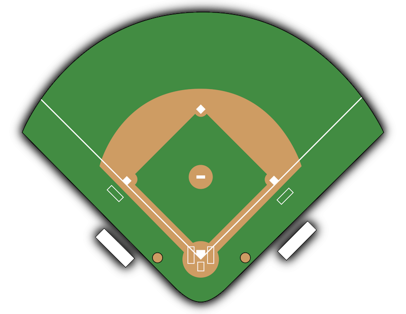
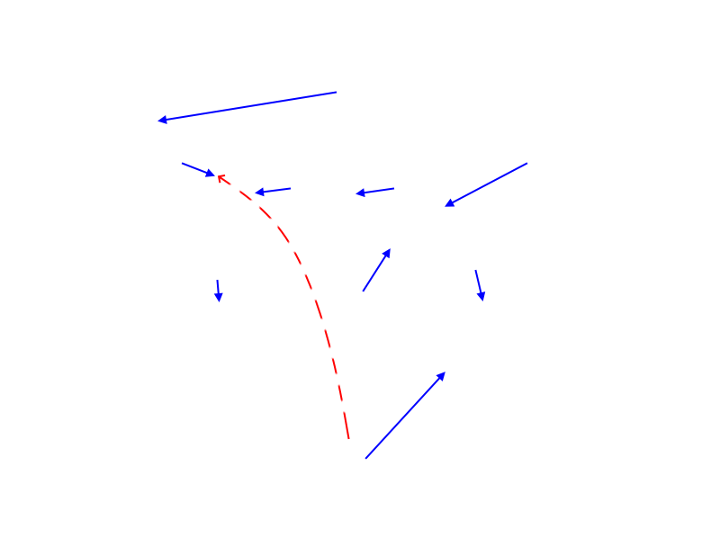

Single to Left - No Runners On
| Position | Movement | Audio |
|---|---|---|
| Pitcher | Moves into backup position between mound and 2B. | |
| Catcher | Follows the runner to 1B to back up an overthrow. | |
| 1B | Moves to cover 1B after seeing the runner touch the base. | |
| 2B | Moves into position to cover 2B and receive the throw. | |
| SS | Lines up relay for the throw from LF, to 2B. | |
| 3B | Stays close to the bag to receive the throw. | |
| LF | Fields the ball and makes a throw to SS cutoff. | |
| CF | Backs up LF in case LF is unalbe to secure the ball. | |
| RF | Backs up position toward infield. |

